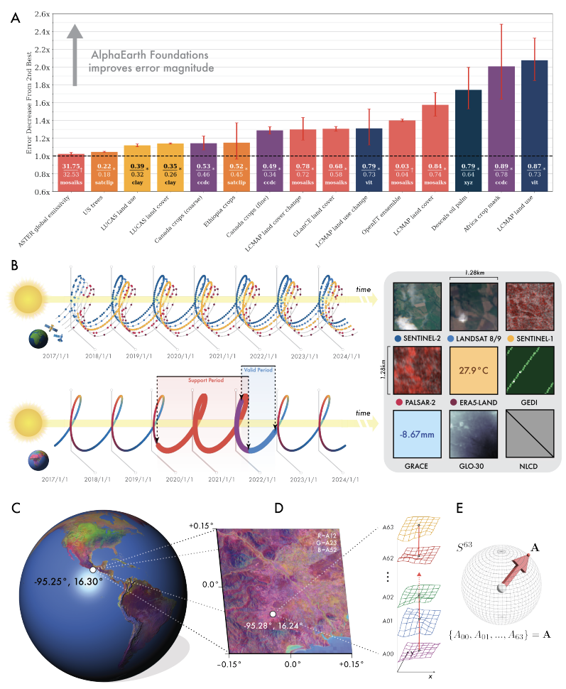
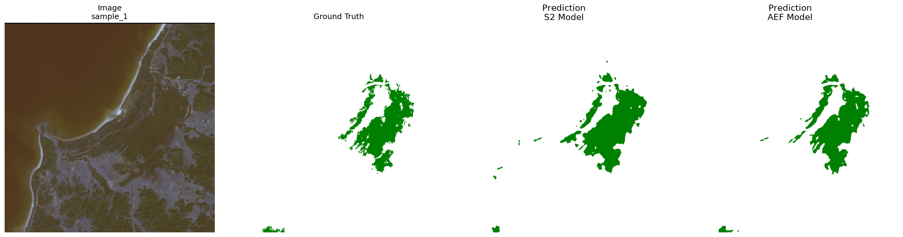
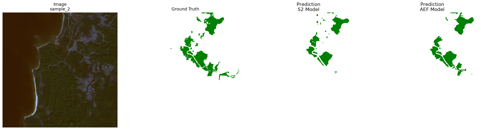
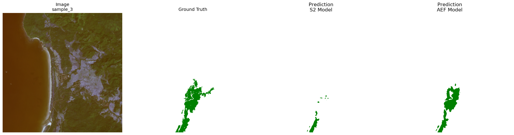

For months I keep hearing about "Earth Embeddings". Something that is not exactly new because I remember the first earth embeddings I heard was MajorTOM which comes from the combination of Sentinel 1 and 2. I'm not sure if this is the first Earth embeddings though. Google's AlphaEarth Embeddings is definitely the first one I read about on a bit more technical level, and the idea to compress information from different sensor into a single embedding is really an interesting one.

The initial plan is to compare mangrove detection (binary semantic segmentation task) using data from Sentinel 2, AlphaEarth Embeddings, and TESSERA. Unfortunately though, TESSERA dataset is not available on the AOI I'm using. Currently, on global scale, the readily available data for TESSERA is mostly for 2024. Meanwhile, my mask/label (Global Mangrove Watch Dataset) is only available up to 2020. Maybe I'll look for an area where both TESSERA and my mask/label are available for my next experiment.
Data Preparation
Since I won't be doing so much hyperparameter tuning, acquiring and preparing the data became the most time-consuming part. Here's a summary of the data preparation process (and some lessons learned):
Global Mangrove Watch (GMW) Mask/Label
GMW is the most straightforward data to prepare. It's a binary mask/label of mangrove extent, which is already in the form of a single image. So I just need to clip it to my AOI and export it. The size of the raster is also the smallest compared with the other data.
-
Source: 2020 annual mangrove extent from awesome-gee-community-catalog
Global Mangrove Watch Dataset
(
projects/sat-io/open-datasets/GMW/annual-extent/GMW_MNG_2020). -
Processing: mosaic the
ImageCollectionto one image, thenclipto my AOI before export. -
Export:
Export.image.toDriveper patch, description / file prefixgmw_extent_aoi, folderGEE_Exports. -
Parameters:
region= my AOI geometry,crs=EPSG:4326,scale= 10 m,maxPixels=1e13(aligned with the 10 m Sentinel-2 tiles).
Sentinel 2
For Sentinel 2, I adapted some of the process from this paper by Davide Lomeo. This one is also relatively straightforward. GEE obviously helps a lot by providing the data and the compute so I don't have to locally compute the median and the spectral indices. That would be a storage and computation nightmare.
-
Source:
COPERNICUS/S2_HARMONIZED, filtered to my AOI (filterBounds) and to 1 Nov 2020–31 Jan 2021 (filterDate), keeping scenes withCLOUDY_PIXEL_PERCENTAGE < 30. -
Cloud mask:
QA60bits 10 (opaque clouds) and 11 (cirrus) masked out; surface reflectance scaled by dividing band values by10000. -
Composite: pixel-wise
median()across the filtered collection, then spectral indices added on that median image:NDVI,NDWI,MNDWI,NDSI,NDMI,EVI,EVI2,GOSAVI,SAVI. -
Bands exported (all as
float):B1,B2,B3,B4,B5,B6,B7,B8,B8A,B9,B11,B12, plus the indices above. -
Export:
Export.image.toDriveclipped to my AOI, description / file prefixs2_aoi, folderGEE_Exports. -
Parameters:
region= AOI geometry,crs=EPSG:4326,scale= 10 m,maxPixels=1e13.
AlphaEarth Embeddings
For AlphaEarth Embeddings


